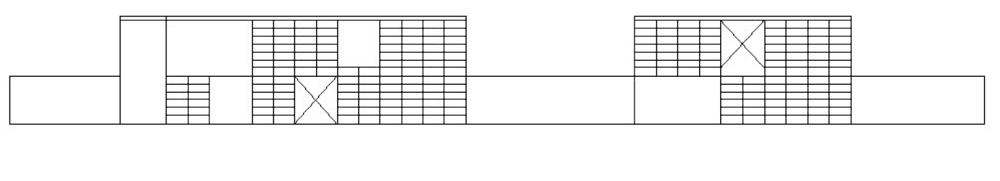

I've wanted to see Eames House for a while, and it seems quite a few friends have too! So join me for a private group tour (TBD date, either April 27 or May 11). The tour will be led by an Eames foundation docent, last about 90 minutes and will focus on the grounds and exterior of the house with glimpses inside.
A Little Eames Day in LA
Eames House, or Case Study House No. 8, is a mid-20th century architectural icon in Los Angeles. The home was designed and built by Charles and Ray Eames, two of the most influential American designers. If you're like me, you've been fascinated by their furniture (1, 2), videos (3, 4), and my favorite, the hang-it-all (5).
I've wanted to see Eames House for a while, and it seems quite a few friends have too! So join me for a private group tour (TBD date, either April 27 or May 11). The tour will be led by an Eames foundation docent, last about 90 minutes and will focus on the grounds and exterior of the house with glimpses inside.
🍸 After the tour, we'll head to a nearby TBA architecturally relevant home for some drinks. Details to be shared soon :)
Who's Coming Along?
There are 15 spots available, and so far those who have expressed interest are a really awesome group — engineers, craftspeople, gardeners, creative directors, mostly from LA and slightly beyond. I believe you'll enjoy the architecture, but I guarantee you'll enjoy the people.
→ Please click here to share your Availability for April 27 and May 11
♥ Taylor
→ Please click here to share your Availability for April 27 and May 11
♥ Taylor